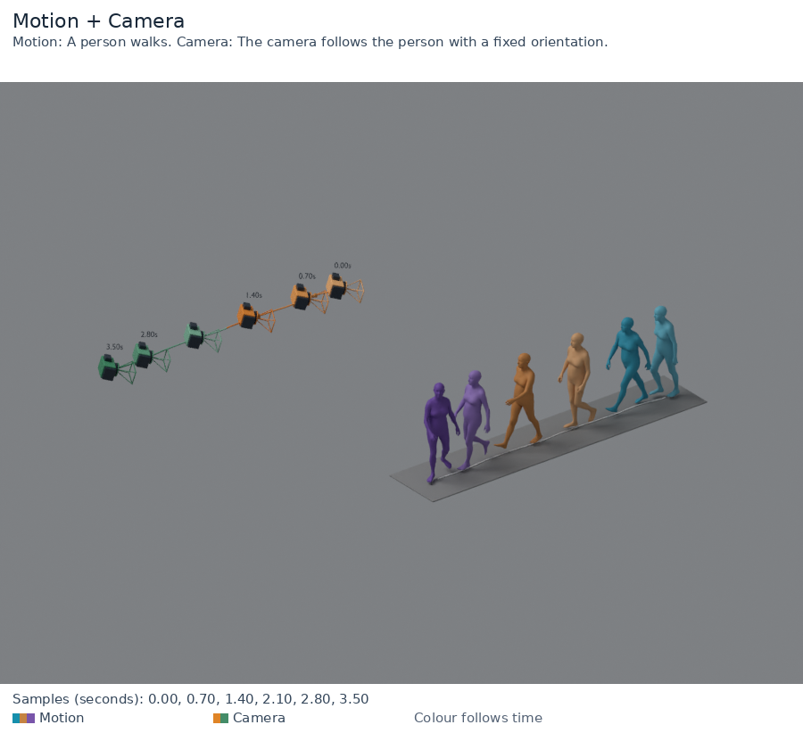
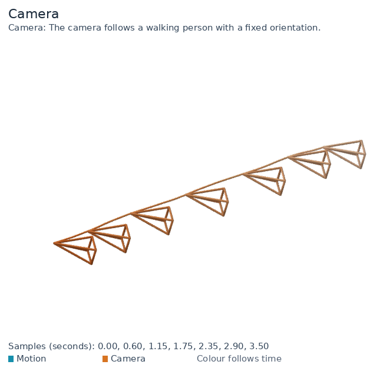
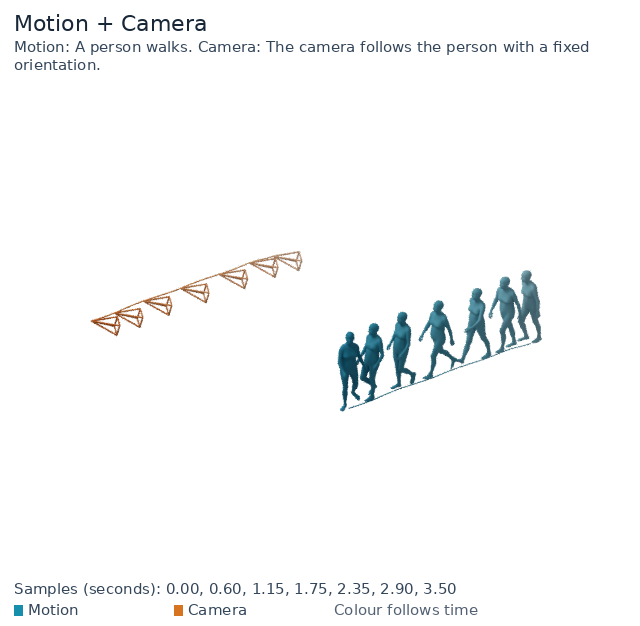
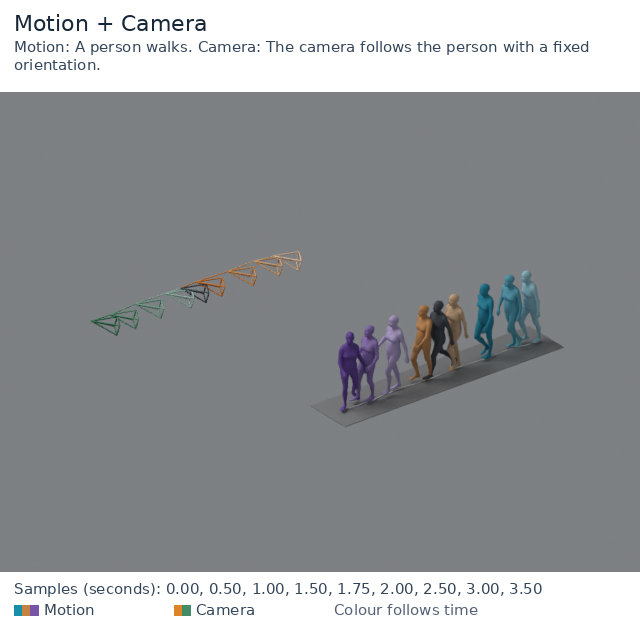
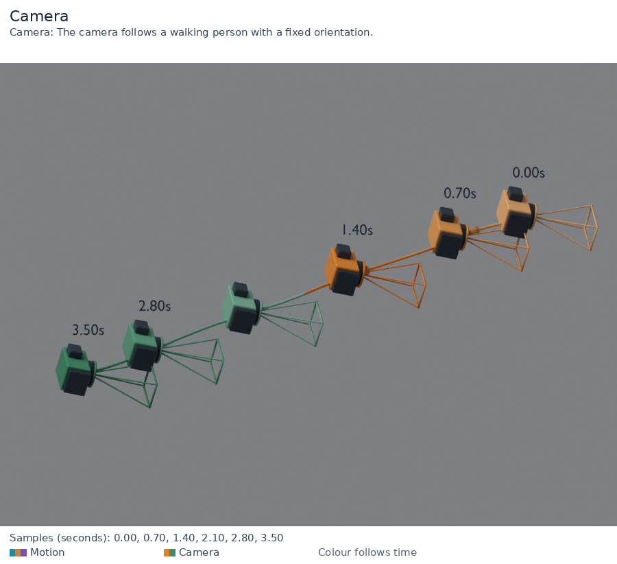
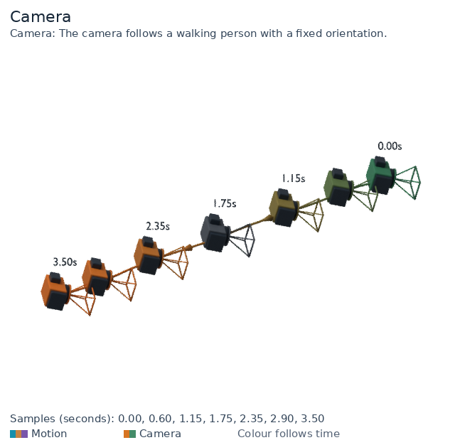
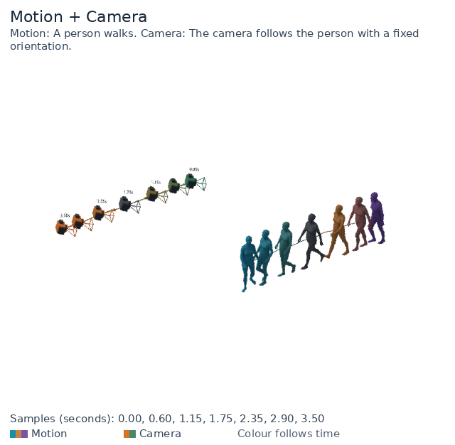
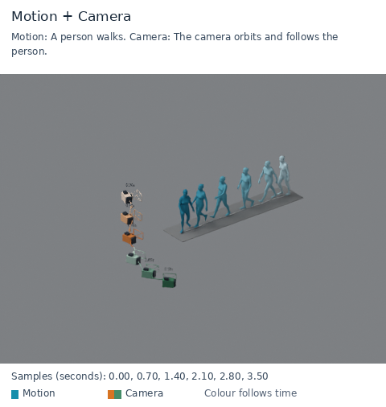

时序图 · v0.4.1实体相机 + 扁平线框机身、镜头、方向箭头与时间标签。Camera: The camera follows a walking person with a fixed orientation.PNG渲染摘要
时序图 · v0.4.1纯线框相机保留简洁锥形线框，纵深压缩到55%。Camera: The camera follows a walking person with a fixed orientation.PNG渲染摘要
时序图 · v0.4.1人体与相机一起看同一个世界坐标，分别显示人体和相机轨迹。Motion: A person walks. Camera: The camera follows the person with a fixed orientation.PNG渲染摘要
视频 · v0.1.0相机完整动画原有线框风格的相机轨迹动画。Camera: The camera follows a walking person with a fixed orientation.PNGMP4GIF渲染摘要
视频 · v0.1.0联合完整动画人体和相机以同一时间轴播放。Motion: A person walks. Camera: The camera follows the person with a fixed orientation.PNGMP4GIF渲染摘要
视频 · v0.1.0实际相机看到什么直接使用输入相机位姿和内参，不是世界观察视角。Motion: A person walks. Camera: The camera follows the person with a fixed orientation.MP4GIF渲染摘要
时序图 · v0.1.1相机透明图原始RGBA PNG；棋盘格是网页衬底，不会写入图片。Camera: The camera follows a walking person with a fixed orientation.PNG渲染摘要
时序图 · v0.1.1联合透明图原始RGBA PNG；棋盘格是网页衬底，不会写入图片。Motion: A person walks. Camera: The camera follows the person with a fixed orientation.PNG渲染摘要
时序图 · v0.3.0多色联合时序人体和相机使用各自独立的调色板。Motion: A person walks. Camera: The camera follows the person with a fixed orientation.PNG渲染摘要
时序图 · v0.4.0实体相机的原比例线框未压缩纵深的外观，可与55%纵深对比。Camera: The camera follows a walking person with a fixed orientation.PNG渲染摘要
时序图 · v0.4.2相机反向连续多色SMPL人体；反向连续渐变、gamma节奏、灰色关键帧和透明背景。Camera: The camera follows a walking person with a fixed orientation.PNG渲染摘要
时序图 · v0.4.2联合反向连续多色SMPL人体；反向连续渐变、gamma节奏、灰色关键帧和透明背景。Motion: A person walks. Camera: The camera follows the person with a fixed orientation.PNG渲染摘要
视频 · v0.4.2固定机位，人物行走原有SMPL动作完全保留，相机位置与朝向保持不变。Motion: A person walks. Camera: The camera stays at a fixed position and orientation.PNGMP4GIF渲染摘要
视频 · v0.4.2固定机位的实际拍摄画面看人物走过画面，验证相机没有自动跟随。Motion: A person walks. Camera: The camera stays at a fixed position and orientation.MP4GIF渲染摘要
时序图 · v0.4.2环绕并跟随SMPL人体只改变相机，人体网格、root和时间不变。Motion: A person walks. Camera: The camera orbits and follows the person.PNG渲染摘要